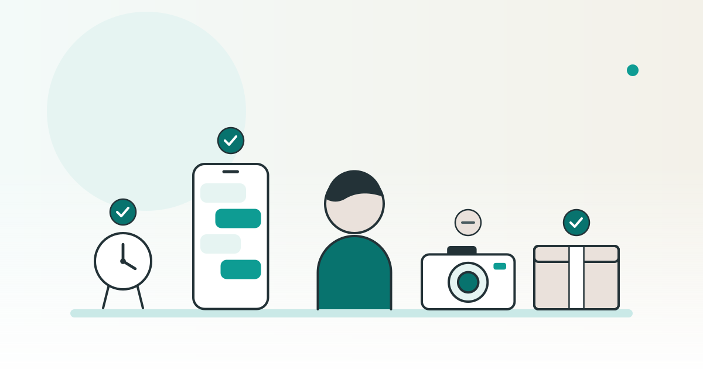

SHOPKIT コラム
ネットショップ運営に向いている人とは？始める前に自分で確かめる作業と時間

ネットショップを始めたいけれど、自分に続けられるか分からない方へ。性格の特徴を当てはめるより、実際に行う作業を小さく試し、自分の予定と照らしてみます。苦手な所が見つかったら、始める前に聞くことや、変えられる条件を整理しましょう。
この記事は、完成品のネットショップを販売している SHOPKIT が書いています。
ネットショップ運営に向いている人は、性格より日々の作業との相性で見る
「几帳面だから向いている」「人と話すのが苦手だから難しい」といった性格だけで結論を出さず、どの作業で手が止まるかを見てみましょう。商品を見ることが好きでも、注文の確認や質問への返事は別の仕事です。好きな商品があることと、お店の仕事を続けられることを分けて考えます。
始める前に確かめたいのは、知らない作業を調べて進められるか、決めた予定で確認できるか、相手に伝える内容を整理できるかです。最初から全部できるかを判定するのではなく、練習できることと、生活の条件が合わないことを分けます。
たとえば、説明文を書くのに迷うなら、商品の特徴を短く整理する練習ができます。一方、相手に返事が必要な時間と仕事や家事が重なるなら、連絡する時間や受ける範囲の検討が先です。性格を変えようとするより、止まる原因を具体的にしてから考えてください。
ネットショップ以外の仕事の形も比べたい時は、次の記事で扱います。ここではお店を始める前に、自分で確かめられる作業へ絞ります。
関連：一人でできる事業の選び方｜家で続けられる小さな商いの条件
注文・発送・問い合わせ・写真の作業を、始める前の点検表にする
候補の商品を思い浮かべ、注文を受けてから届けるまでと、その前後にある作業を並べます。使うお店や販売方法がまだ決まっていなければ、分からない部分を質問として残します。実際の注文を受ける前に、流れを紙に書くだけでも、確かめる項目を見つけられます。
次の表は、始める前に試すための例です。所要時間の目安や、適性を点数で決める表ではありません。試せたこと、調べたいこと、予定と合わないことを、作業ごとに記入して使います。
| 点検する作業 | 始める前に試すこと | 記録すること |
|---|---|---|
| 注文を確認する | 注文が来た時に確かめる情報を、手順から拾う | 分からない項目と、確認に使う時間帯 |
| 発送につなげる | 自分で行う部分と、相手へ手配する部分を書き分ける | 荷物を出す予定や、手配状況を確かめる相手 |
| 質問に答える | 商品について聞かれそうなことを、説明の文にする | 自分で答えられることと、調べてから返すこと |
| 写真や説明を整える | 手元の物を撮り、特徴を短く説明してみる | 準備する物と、迷った操作や伝え方 |
| 記録を見直す | 途中でやめた作業を、書いた手順から再開する | どこまで進んだか、次に何をするか |
写真を撮る練習に使うのは、自分の手元の物で構いません。ここで見たいのは、商品を公開する前に説明を整える作業との相性です。撮影や文章の出来だけで向き不向きを決めず、何を調べれば続けられるかを残します。
お店を始めた後の受注や発送の管理方法は、次の記事へ送ります。点検の段階では、自分で対応する範囲を知ることを優先してください。
関連：ネットショップを一人で運営するには｜毎日の作業と、続けるための決めごと
空いている時間と、荷物を出す日や手配を確認する時を照らす
作業ができそうな時間だけでなく、その時間に何を確かめられるかを書きます。説明文は落ち着いた時間に準備できても、相手の返事を待つ作業は同じ予定で終わるとは限りません。自分の作業と、相手が動く時間を分けて見ます。
自分で荷物を出す形なら、準備を終える時と、出せる曜日を照らします。外へ手配する形なら、依頼を送る時と、進み具合を確かめる時を置きます。どちらの形でも、決まっていない予定を先にお客様へ約束しないようにします。
消費者庁の通信販売の案内は、商品を渡す時期や返品の扱いを、表示する内容として挙げています。予定表では、自分が作業できる日と、お客様へ案内する予定が合っているかも確認します。個別の表示や手続きの判断は、公的な窓口で確かめてください。
まずは普段の暮らしを一週間分、予定として書いてみます。通勤、仕事、家事、休息を置いた後に、確認や準備の時間を当てはめます。忙しい日も含めて見て、毎回予定を動かさないと入らない作業がないかを確かめます。
総務省統計局の社会生活基本調査の案内には、生活時間に関する結果への入口があります。統計の平均から自分に使える時間を決めず、自分の生活の記録と、選ぶお店の作業を照らします。空き時間の長さだけでなく、途中で止めても再開できる作業かも見てください。
得意な作業と苦手な作業を分け、外の仕組みに頼れる所を探す
試して難しかったことは、「パソコンが苦手」のような大きな言葉でまとめず、困った操作まで小さく分けます。入力する所が分からないのか、説明を読むと迷うのか、画像を扱う所で止まるのかで、次に試すことは違います。
手順を見ながら進められる作業は、その手順を自分で使える形に残します。作業を再開できるよう、途中の状態や、聞いた答えも記録します。操作を練習する考え方は、次の記事で扱います。
苦手な部分を外のサービスや仕組みで補いたい時は、何を任せられるかと、自分が確認する部分を分けます。費用や条件、相手が対応する範囲を確かめてから、点検表を書き直してください。仕組みを使うことだけで、確認の仕事までなくなるとは考えません。
中小企業基盤整備機構の起業支援ページには、人や物の準備、開業の手続き、お店へ人を呼ぶ準備など、調べる項目が整理されています。知らない作業を探す入口としても使えます。自分が困った操作と、事業を始めるための確認事項を区別して、相談する材料にします。
家族の予定と、家で荷物を置く場合の場所を確かめる
家で仕事をする場合は、自分だけの空き時間では予定を決められないことがあります。家族が同じ場所を使う時間や、外出する予定も入れて見ます。家族の予定が変わった時に、どの作業を後へ動かせるかまで話しておくと、無理な約束を減らせます。
| 生活と照らす項目 | 始める前に確かめること | 合わない時に見直すこと |
|---|---|---|
| 共有する時間 | 仕事や家事、家族の予定と確認する時間が重ならないか | 受け付ける量や、作業をまとめる時期 |
| 作業する場所 | 撮影や梱包などを行う場合、途中でも使える場所があるか | 作業の方法と、片付けて再開する手順 |
| 荷物を置く場所 | 自分で商品や梱包材を持つ形なら、生活の動線をふさがないか | 扱う物の大きさや数量、選ぶ販売の形 |
| 休む場合の対応 | 予定が変わった時、返事や手配を誰に相談するか | 約束する範囲と、連絡を確認する方法 |
荷物の量や必要な場所は、扱う商品と販売の方法で確かめます。ネットショップなら家に広い保管場所が要る、あるいはまったく要らないと、一律に決めないようにします。自分で行う作業が分かってから、場所の条件を具体的に見ます。
生活との相性が合わない時は、向いていないと即断せず、先に条件を変えられるかを考えます。扱う物や量を変えるのか、始める時期をずらすのかで選び方も変わります。始める前の失敗を避けるために確かめる点は、次の記事で扱います。
関連：ネットショップ開業で失敗しやすいこと｜仕入れ・価格・集客・お金・契約
お店を買って始める前に、受け取った後の作業を相談で聞く
完成品のお店を選ぶ場合も、準備が整っていることと、自分で続けられることは別です。受け取る中身を見たうえで、注文後に行う確認や、問い合わせへの対応を質問します。点検表で分からなかったことを、そのまま聞く項目にしてください。
SHOPKITは、完成品のネットショップを購入できるサービスです。お店一式に、仕入れの情報と販売の進め方やお店へ人を呼ぶ手順書をそろえてお届けします。商品とお店の準備が整った状態から、販売を始める形です。
SHOPKITのオンライン相談では、お店ごとの商品一覧を確認できます。
気になる商品があれば、注文を受け付けた後の流れを質問します。自分が荷物を扱う所があるか、どの情報を誰へ伝えるか、手順書のどこを読めばよいかを聞いて、自分の予定へ当てはめます。対応の仕方を確かめてから選ぶための質問です。
完成品に含まれる物は、サービスページのお渡しするもので確認できます。お店の一覧を見た時も、商品の好みだけで決めず、記入した点検表と合わせて相談する材料にしてください。
よくある質問
ネットショップに向いているか迷う人は、始める前に何を試せばよいですか？
注文の確認、発送の手配、質問への返事、写真や説明の準備を作業に分けます。手元の物を説明するなど、試せる部分から進め、手が止まった所と聞きたいことを残してください。
写真や文章の作業が苦手な人は、ネットショップを始めるのを見送るべきですか？
苦手という言葉だけで決めず、どの操作や伝え方で迷うかを分けます。練習できる部分、手順や外の仕組みで補う部分、予定が合わない部分を整理して考えます。
完成品のお店を購入する前は、自分の作業についてどんな質問をすればよいですか？
注文後の流れや問い合わせの確認、自分が荷物を扱う範囲、手順書で確かめる所を質問します。点検表へ答えを書き、自分の使える時間と場所に当てはめて選んでください。
SHOPKITのお届けするものと相談については、2026年10月15日時点のサービスページの記載を参照しています。公的資料は2026年10月30日に確認した内容です。